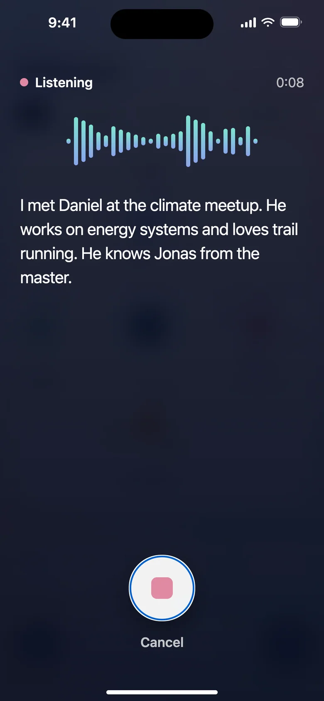
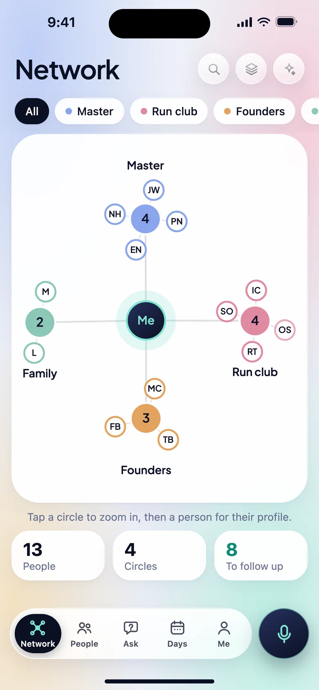

Typing notes
Too much work. It never happens after a long evening.
Early access · small test group
Speak for ten seconds after you meet someone. Orbit remembers what they told you, then comes to you to bring you back together.


Daniel works on energy systems
Knows Jonas from the master
Send him the grant checklist
01 The forgetting
She wants to really know these people, not just be connected to them. But by evening, most of it is gone.
Too much work. It never happens after a long evening.
Too loud. She wants a friend, not a feed.
Sounds like a dossier. That is exactly who she refuses to be.
Her address book had turned into a graveyard: names without stories.
02 The ten seconds
You are the hero. Orbit is only the guide, a social memory that listens, files and nudges. Three steps, no system to maintain.
After you meet someone, tap the mic and say what stuck. Ten seconds is plenty. No typing, no forms.
Orbit turns what you said into small cards. Look them over. Nothing is saved until you say so.
Orbit comes to you at the right moment and brings you back together. A nudge, not a to-do list.
I met Daniel at the climate meetup. He works on energy systems and loves trail running. He knows Jonas from the master.
03 The app
Real screens from the Orbit test build, shown with sample data.
04 Orbit comes to you
Every line you say lands on one of three paths. Each one asks for a different kind of attention.
A race, an exam, a pitch, a promise. Follow up when it comes due.
"Jonas moves to Munich this week. Ask about the new flat."
What lines up with what you are working on right now.
"You are into AI startups. Jonas is hiring a designer for his."
A shared subject, between you and them or between two people.
"Maya and Daniel both love trail running. Worth an intro?"
05 Private. Yours.
Orbit is a notebook about people you care about. It should feel like one.
They live in your own account. There is no public profile and nothing for anyone to browse.
What a friend shares with you arrives by QR code, face to face, and stays separate from your private notes.
Orbit proposes cards. You keep, move or drop every line.
06 Your move
We are opening Orbit to a small test group first. Join with 2 € and you are in the first group, with a direct line to the people building it. Rather wait? The free waitlist is always open.
Why 2 €? Anyone can say "sounds interesting". Two euros says "I would really use this". We would rather build Orbit with people who want it than with everyone who nods politely.
Already on the list? Pay your 2 € with PayPal
A mobile app that works like a social memory. After you meet someone you speak for ten seconds, Orbit files what you said under the right person, and later nudges you to follow up. You can also just ask it: "What do I know about Jonas?"
A seat in the first test group: early access to the app, and a direct line to the people building it, so your feedback shapes what Orbit becomes. It is a small commitment, not a purchase.
To keep the group honest and small. We want feedback from people who really want this, not polite interest. Two euros is a simple way to tell the difference.
Yes. If you change your mind before your group opens, write to hello@example.com and we will send it back.
You leave your email first, then pay 2 € through PayPal. We match payments to emails by hand, so use the same email if you can. If your PayPal email is different, just write to us.
We let people in in small groups, test-group members first, in the order they joined. We will email you with everything you need when your group opens.
Your notes live in your own account and nobody else can browse them. Sharing happens only by QR code, in person. Details are in our privacy notice.